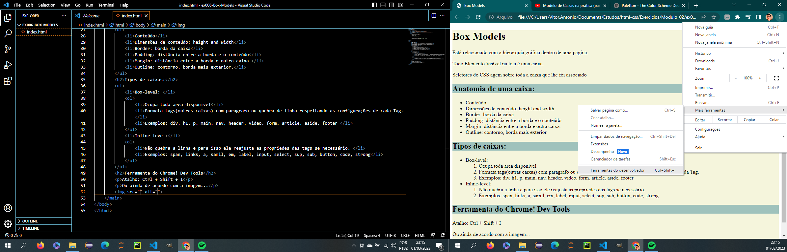

Box Models
Está relacionado com a hierarquia gráfica dentro de uma pagina.
Todo Elemento Visível na tela é uma caixa.
Seletores do CSS agem sobre toda a caixa que lhe foi associado
Anatomia de uma caixa:
- Conteúdo
- Dimensões de conteúdo: height and width
- Border: borda da caixa (style: dashed, dotted, double, groove, solid )
- Padding: distância entre a borda e o conteúdo (top, right, bottom, left---sentido horário de atribuição)
- Margin: distância entre a borda e outra caixa. (top, right, bottom, left)
- Outline: contorno, borda mais exterior. ()
Ordem para o uso das short hands!
- width
- style
- color
- top
- right
- bottom
- left
Tipos de caixas:
- Box-level:
- Ocupa toda area disponível
- Formata tags(outras caixas) com paragrafo ou quebra de linha respeitando as configurações de cada Tag.
- Exemplos: div, h1, p, main, nav, header, video, form, article, aside, footer
- Inline-level:
- Não quebra a linha e para isso ele reajusta as propriedes das tags se necessário.
- Exemplos: span, links, a, samll, em, label, input, select, sup, sub, button, code, strong
Ferramenta do Chrome! Dev Tools
Atalho: Ctrl + Shift + I
Ou ainda de acordo com a imagem...
Com essa ferramenta se torna mais fácil analisar e manipular os códigos sem alterar o código fonte.